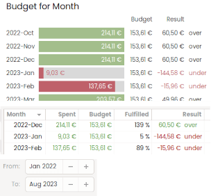

HomeBank User manual
Previously on HomeBank...
To review the complete list of changes, please use the Help > Release Notes menu from HomeBank program.
New features in v5.8
New features in v5.7
New features in v5.6
New features in v5.5
New features in v5.4
New features in v5.3
New features in v5.2
New features in v5.1
New features in v5.0
New features in v4.6
New features in v4.5
New features in v5.8
Favorite saved filters
From the statistic report and the show all transaction window, you can now manage a list of favorite filters, saved for each of your wallet.
This will ease the grouping you want to show those reports. Read the favorite filter usage for more details.
↑ Back to Top
Tooltip of active filters

In several report windows: statistics, trend time and balance, there is now a tooltip that shows the active filters, as sometimes there are implicit filters you cannot control, and this will help you understand what the results are composed of.
The whole area between Filter and the filter button will show the tooltip if you put the mouse pointer over it.
↑ Back to Top
Color flags

There is now 6 color flags you can assign to transaction, colors are Red, Orange, Yellow, Green, Blue and Purple.
The assign can only be done from the ledger window using the context menu or some shortcuts CTRL+x.
There is also a new quick-filter to easily filter on flags.
↑ Back to Top
Life energy
Life energy is a measurement of your expense by hours of work, based on you estimate earning by hour. This is an alternative and interesting way to consider your spending.
After you have filled your estimate 'earn by hour' into Properties dialog, you will be able to toggle on/off an additional (..h..m) beside the Expense into the ledger window, there is a toggle toolbar button on the top.
↑ Back to Top
Payment re-order & hide
A new preference is available for you to re-order the payment method and hide the ones you don't use.
↑ Back to Top
New features in v5.7
Cash Flow Forecast

A cash flow forecast is now available for the following report:
- home report
- statistics report
The capture beside is a graph of this year (2023), with a forecast of 8 months ahead, taken in may 2023.
Read forecast lexicon for more details.
↑ Back to Top
Budget Report over time

It is now possible to view the budget report over time (month based).
There was also a few changes made to this report:
- a Fulfilled column was added into the listview
- the date range selection is now bounded to:
From: month/year
To: month/year
↑ Back to Top
Chart drill down for categories

Chart drill down is now available for report that display categories, including the budget report. It is available as well for donuts chart, than bar chart, and you can also click on the legend text.
If a sub-level is available, the cursor will change to an hand, and you must click to drill.
Then to go back use the breadcrumb and click back on Category.
This new feature, also leads to the removal of Subcategory selection in profit of a 2 level listview onto report, with expand/collapse for categories
↑ Back to Top
New Home Total and Time chart

The historical Where your money goes, showing the top x spending by category is replaced by 2 report:
A) the total report, which can display the following, you can select using the gear icon button:
- Top X Spending / Category
- Top X Spending / Payee
- Top X Spending / Account
- Account Balance
B) the time report, which can display the following, you can select using the gear icon button:
- Spending by Month
- Account Balance
- Global Balance
This report also show a forecast, when it is enables and in date junction, see
forecast lexicon for more details.
↑ Back to Top
New features in v5.6
Charts for Over Time Statistics report
The Over Time part of the Statistics report was introduced into v5.3 as a standalone table view.
This version officially introduce the graph part of this waited and powerful feature, so you now have both a Stack bar graph and a 100% Stack bar graph, thus
those two were already released with a back-port since v5.5.4
With this version you also have a Balance mode option when you select the Account as a source
↑ Back to Top
Filter redesign and improvement
The filters into HomeBank was completely rewritten in preparation for future changes.
A lots of changes have been made to the filter dialog:
- reorder of the switch part menu on the left + added a visual indicator if it is active
- each part has a separated On/Off button, then an Include/Exclude radio-button
- Status part was split to separate Status and Type part with ability to filter on useful individual values of each
- Tag is now a filter part itself, with a checkbox list-view like payee, category or account
- Amount/Text were regrouped into the same part
↑ Back to Top
Internal transfer with different currencies
Transfer with different currencies are now permitted. When you select transfer type in the Transaction dialog you have an additional amount widget.
this amount is prefilled only when you Add and if:
- the source account is into base currency
- the target currency have a conversion rate
otherwise you have to fill it manually
↑ Back to Top
Multiple item selection for trend time report
The Trend Time Report was until now restricted to display one item at a time or all the items.
Now, you have a list of items (Account, Category, Payee, Tag) so that you can use combination of items to be computed and displayed.
↑ Back to Top
More date range option and redesign
The date range widget was redesigned and enriched with a lot of new entries.
It is divided in 2 vertical part and 3 columns.
- The top part show preset for past / present / future
day, week, fortnight, month, quarter, year.
- The bottom part have the other preset
Last xx days, 12 months and the new '30 days around'.
↑ Back to Top
Hide payee/category to lighten the lists
As some items may become outdated, it is now possible to hide payee/category from the list or drop-down widgets.
For that, new 'eye hide' buttons were added into both the payee dialog and category dialog so you can control what to display or not.
By default also on those dialogs, the count column are hidden as well and a show usage button was added.
↑ Back to Top
Feature to lock changes of reconciled transactions
This feature enables to lock the reconciled transaction for any changes, this is a missing protection I wanted to add for a while and asked by some users.
By default it will be enabled, but if you want to get back to the actual behavior, you have a preferences into the transaction section as well.
There is also a ON/OFF switch into the account window to quickly enable disable it for quick edit.
At last, when this feature is on, you cannot edit reconciled transaction from any detail report list.
↑ Back to Top
Assignment dialog changes and improvements
To improve and ease the management of a long list of assignment, some changes have been made to the assignment dialog:
- the dual view dialog was changed to a single list-view with more columns
- you can sort the list-view on every columns
- a quick search input to filter is available, as usual with shortcut CTRL+F, then ESC to empty
- editing is now done using the edit action button or by double-clicking on the assignment line
- the drag and drop feature was replaced to a more convenient set of move [up][down][to] action buttons
Also you can add an amount into the condition
↑ Back to Top
New features in v5.5
Print for graphic report
The report graphic charts can now be printed, or preferably exported as a pdf, and this directly from the report dialog.
↑ Back to Top
Your account new columns and display choose
There was a lot of changes in 'Your Accounts' list:
- Bank column renamed to Reconciled
- Added a Cleared column
- Added column to display to be configurable, with the knob on top left
- Added a tooltip to display:
- the remaining amount until overdraft
- the remaining amount before the maximum
- the last reconciled date
↑ Back to Top
GTK override for font size and dark theme
You can now override the GTK font size and set the dark theme directly from the preferences.
↑ Back to Top
New features in v5.4
Mass assignment creation
Like it was possible to create a template from selected transaction into the transaction list, it is now possible to create
some assignment as well.
↑ Back to Top
Popup menu on transaction list
Now a right click on the transaction list pop an action menu
↑ Back to Top
Multiple line scheduled post
Now you can select several line in the main window scheduled transaction list, and post or skip.
↑ Back to Top
Reworked the welcome dialog
The welcome dialog was reworked: added an icon, re-layout, show next time checkbox to enable or disable to show it at start
↑ Back to Top
New features in v5.3
Added a transaction type
The transaction now have a strong type: Expense/Income/Transfer
This bring more clarity, remove the Internal transfer payment mode in profit of the Transfer type. And also the Transfer payment was renamed Bank Transfer.
↑ Back to Top
Added group account
A free typing group was added so that you can reorganize 'Your account' list in the main window the way you want and independently from the historical account type or institution name.
↑ Back to Top
Statistics report shows items over time
The first part was ready to deliver into this release, this is the table view which enables to summarize items by interval of:
- Day
- Week
- Month
- Quarter
- Half Year
- Year
A future release will bring the stacked charts in addition to this feature.
↑ Back to Top
New features in v5.2
Export transaction as PDF (for print)
You can now export the transaction of a single account to a PDF file. This is the first part of the print support into HomeBank.
↑ Back to Top
List of all transactions
From the main window transaction menu you can now open a ledger window with all transaction of all accounts.
Most of the action are available here, except:
- export to .qif, .pdf
- the duplicate finder
- convert to Euro
- auto assignment
- the running balance is not showed
↑ Back to Top
Import of multiple file with more option
The import process was completely rewritten starting from zero, with all your wishes in mind. The goal was to enable more flexibility, like import several files at a time and to simplify the access to the option. Adding to this, I added some more duplicate/similar option and a few other refinements. See the import process for details.
↑ Back to Top
A real backup mechanism
A real backup mechanism is now available and enable to create a real backup file once a day, with a configurable occurrence.
↑ Back to Top
Duplicate transaction finder
A duplicate finder is now available from a single account ledger window in the tools menu. The feature just mark in place the transaction, in bold for the one to keep and strike the potential duplicate called similar.
the similarity is evaluated on: amount, date (+gap).
↑ Back to Top
Default template for each account
On each account you can set a default template transaction, so that every time you create a transaction on that account, the template is used.
↑ Back to Top
New features in v5.1
Multiple currencies
You can now manage accounts in different currencies. When opening a file from a previous version of HomeBank, you will be prompted to choose a base currency.
Then you can add several currencies with the currencies dialog, update the exchange rate on-line, and assign different currencies to every account.
Take care as the currency formatting option are now in the currencies dialog.
↑ Back to Top
Payee default category and payment type
Payee now enables to set some default value for category and payment. So when you add a new transaction, choosing a payee will automatically fill the category and payment. When you edit a transaction, choosing a payee will complete one or both those two fields if they are empty. See the payee dialog.
↑ Back to Top
New feature for automatic assignments
New capabilities of the automatic assignment are available:
- assign payment
- overwrite is now possible
- regular expression can be used
See the assignment dialog.
↑ Back to Top
New features in v5.0
Cleared status to enrich the transaction status
|
A cleared status for transaction was added, to enrich the existing status. You now also have a Status column into the transaction list to display a new set of status for transactions.
|
|
↑ Back to Top
Stack chart for budget
| I finally found some time to code a new graph report dedicated to budget, please welcome the stack chart that clarify so much the budget report ! |
 |
↑ Back to Top
Quick search for list
↑ Back to Top
New features in v4.6
Quick search for transaction
|
In the transaction window, right to the balance you will now find a quick search input to fast filter transaction based on text column.
The search apply to all columns except status, date and amount columns.
|
|
↑ Back to Top
Configure fiscal year boundaries
|
Starting 4.6, you can define your fiscal year start/end date.
Previously the fiscal year was aligned to the calendar year, starting on 1st January and ending on 31 December.
|
|
↑ Back to Top
Scheduled transaction date before or after weekend
|
Insert a scheduled transaction can be controlled to avoid insert on weekend and to automatically change the date to before or after.
|
|
↑ Back to Top
Ability to individually play scheduled transactions from the list
|
You now have 2 buttons below the scheduled list on the main window, one to Skip, one to Post, and this for every scheduled you want to manage manually.
If the scheduled transaction can be posted as it, it will be, otherwise if the amount or target account is not prefilled, you will be prompted with the transaction dialog to make any changes before posting the transaction.
|
|
↑ Back to Top
New features in v4.5
Ability to change language
You can now select a different language than the one of your system !
↑ Back to Top
Where your money goes
Top 5 Spending report !
|
Top 5 spending category new report can be optionally displayed into the main window. The date range can be configured within the preferences, and changed main-window too.
|
|
↑ Back to Top
Category split for transactions
|
This is a long time wish which is now possible into HomeBank. You can split non internal transfer up to 10 categories. A new button was added on the right of the amount widget into the transaction dialog.
|
|
↑ Back to Top
New filters for account window
The account window now have a new filter / information bar.

Here is a description from left to right:
- Account title
- Date range filter
- Type filter: expense, income
- Status filter: uncategorized, unreconciled
- Reset filter button
- Number of items displayed with total amount
- Number of transaction selected and the amount sum
↑ Back to Top
Scheduled append until a day of month
You can now insert transaction within a specific day in the next month.
So for example, you can add until the 28th of each month, the selected date excluded, which mean transaction that should occurs on 28 will not be inserted.
You can keep the previous behavior to add xx days into the future from today's date.
↑ Back to Top
 :
:  :
: